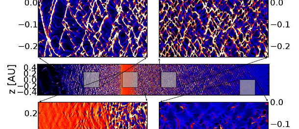
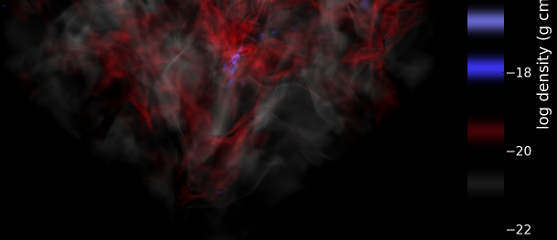
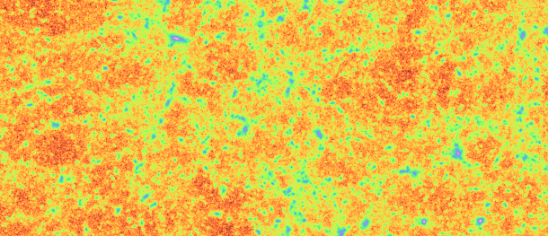
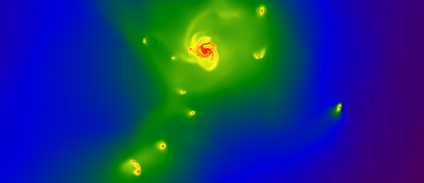
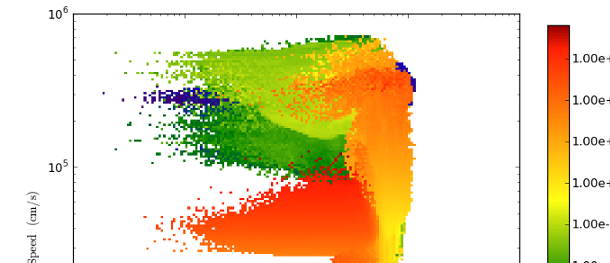
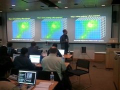
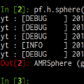

the yt project
Astrophysical Simulation Analysis and Viz
-

Illustrative analysis
Piernik simulation of protoplanetary disk by K. Kowalik
-
Visualization of Complex Structure
Opaque contour rendering of a cloud-crushing simulation by Silvia, Smith & Shull.
-

Common Analysis Language
ORION simulation of star formation by S. Offner et al.
-
Physically-Motivated Visualization
Simulation of dwarf galaxies by Wise & Cen
-

Fast projections
Projection of dark matter density by the Nyx group
-
Isocontour Visualization
Population III star simulation by Turk et al.
-

Massively Parallel
Cluster simulation by Skillman, Burns & O'Shea
-

Quantitative Viz
Off-axis projection of a disk-galaxy by Hummels & Bryan
-

Quantitative Analysis
Phase plot of matter distribution by Turk & Bryan
Detailed data analysis and visualizations, written by working astrophysicists and designed for pragmatic analysis needs.
Data-Driven
Inspect your datayt is designed to provide a consistent, cross-code interface to analyzing and visualizing astrophysical simulation data from a physical perspective.
Read MoreCommunity
Participants welcome!yt is composed of a friendly community of users and developers. We want to make it easy to use and develop — we'd love it if you got involved!
Read MoreFree Software
Open Source, Open Scienceyt is developed completely in the open, released under the GPL license. The developers are committed to open source practices and fidelity of scientific results.
Read Moreyt mission statement
The yt project aims to produce an integrated science environment for collaboratively asking and answering astrophysical questions. To do so, it will encompass the creation of initial conditions, the execution of simulations, and the detailed exploration and visualization of the resultant data. It will also provide a standard framework based on physical quantities interoperability between codes.
Development of yt is driven by a commitment to Open Science principles as manifested in participatory development, reproducibility, documented and approachable code, a friendly and helpful community of users and developers, and Free and Libre Open Source Software.
Other Quick Links
About YT
 The yt project is a Python package for analyzing and visualing volumetric, multi-resolution astrophysical data. yt was originally written by Matthew Turk in late 2006 to quickly slice data from the code Enzo.
Since that time, it has grown to be a truly community-supported code, with a core development team, contributors from all around the globe, active user and developer communities, and even user-focused workshops.
Thanks to this community investment and growth, what started as a simple, one-off plotting script has grown into a fully-featured tool that can read data from half a dozen codes, be called from within running simulations, and even generate volume renderings that can be directly displayed in planetarium domes.
Community
Participation encouraged!
Recent Blog Entries
How To Get Involved
yt is a friendly community. We like hearing about fun things you have done with the code, and we're happy to help you out if you have a question or some trouble. You can join us in IRC, on the mailing lists, and if you'd like, you can check out how to develop, too.
If you've got some code to share, or scripts that you'd like to share, start up a repo on BitBucket , or share them on our PasteBin. For longer chunks of code or repositories used to make papers, we encourage you to check out the yt Hub, which is designed to share utilities, management scripts and so on with other people. If you have any trouble, drop by the mailing list and we'll be happy to help out.
Hope to hear from you!
Communication Channels
users mailing list
dev mailing list
commits mailing list
IRC (#yt on chat.freenode.net)
Getting YT
Installation instructions for the faint of heart
yt is built on a stack of completely free and libre open source software, with no proprietary dependencies. It provides its own install script, to assist with constructing an isolated environment that can be upgraded and operated in independently of the host operating system.
Usually getting yt is as simple as running the installation script. To download the current "stable" version:
$ bash install_script.sh
Or, if you'd rather the current main development tree:
$ bash install_script.sh
Either way you do it, you can easily update to the most recent version of the code (in your branch) very easily:
Mike Kuhlen has kindly provided PPAs for Ubuntu. If you're running Ubuntu, you can install these easily:
$ sudo apt-get update
$ sudo apt-get install yt
If you'd like a development branch of yt, you can change yt for yt-devel to get the most recently packaged development branch.
There are more detailed instructions for installation in the manual, and some pointers about some community installation locations on commonly-used supercomputers.
Examples
Some examples to get you going
Recipes!
 In the documentation you'll find a number of samples, examples, tutorials and canned recipes. You can even check out the cookbook. Additionally, on the community mailing list, there are a number of people who are willing to help out.
Here, though, we've provided a couple snippets of code that show how you might get started looking at data, making visualizations, and exploring. This is only a selection of the stuff yt can do, but it is a good sampling.
In addition, check out some of the really cool images and videos that people have created using yt. If you have something to contribute, please submit your scripts to the yt Hub or videos to our vimeo group.
Script Examples
from yt.mods import *
pf = load("RD0005/RedshiftOutput0005")
# Project Density along the x axis...
ProjectionPlot(pf, "x", "Density").save()
from yt.mods import *
pf = load("RD0005/RedshiftOutput0005")
# Project Density along the x axis...
p = ProjectionPlot(pf, "x", "Density")
halos = HaloFinder(pf)
p.annotate_hop_circles(halos)
p.annotate_hop_particles(halos, 10) # Max of 10 halos
p.save()
from yt.mods import *
pf = load("plt01200")
pf.h.print_stats()
print pf.h.grids[0]["Density"]
for g in pf.h.grids:
print g.LeftEdge, g.RightEdge, g.dds, g["Density"].max()
from yt.mods import *
import yt.visualization.volume_rendering.camera as camera
pf = load("JHK-DD0030/galaxy0030")
image = camera.allsky_projection(pf, [0.5,0.5,0.5], 100.0/pf['kpc'],
64, "Density")
camera.plot_allsky_healpix(image, 64, "allsky.png", "Column Density [g/cm^2]")
from yt.mods import *
pf = load("DD0087/DD0087")
sp = pf.h.sphere('max', (100.0,'au'))
L = sp.quantities["AngularMomentumVector"]()
off = OffAxisSlicePlot(pf, L, "Density", center="max", width=(1000, "au"))
off.save()
from yt.mods import *
pf = load("JHK-DD0030/galaxy0030")
sphere = pf.h.sphere('max', (125, 'kpc'))
limits = sphere.quantities["Extrema"]("Density")[0]
tf = ColorTransferFunction(na.log10(limits))
# five layers, with the kamae colormap, 0.001 dex wide each
tf.add_layers(8, colormap="kamae", w=0.001)
cam = pf.h.camera([0.5, 0.5, 0.5], # center
[0.2, 0.3, 0.4], # view-angle
125.0/pf['kpc'], # FOV
(512, 512), # resolution
tf) # transfer function
cam.snapshot("image.png", clip_ratio=4.0) # clip by 4.0 * std()
Development
Want to help out?
Getting Started
If you're interested in getting started with helping out, the easiest way is to Fork us on BitBucket, check out the developer guide, and stop by the developers' mailing list. yt is released under the GPLv3.
There are lots of fun projects to work on, along with some open issues, and we'd particularly like if you'd help out by adding a new code or if you'd like to help out by shoring up support in semi-supported code.
Let us know how it goes!
Project Statistics
Testing Dashboard
Thanks to Shining Panda for sponsoring our testing dashboard and continuous integration:
This contains the testing results of the current development branch.
Recent Commits
Recent Bug Reports
Help!
"Help" is not a four-letter word
Read Stuff
- yt Orientation
- Documentation
- Cookbook
- Method Paper
- How to Ask for Help
- Screencasts video channel
- Slides from the workshop
- Workshop Videos
Talk to Somebody
- Web Chat (#yt on chat.freenode.net)
- Users' Mailing List
- Report a Bug!
Helpful Users and Devs
If you're struggling with trying to figure something out, or where to look for information, we're happy to help out! There are a number of prepared documents, like the yt orientation, the cookbook and the documentation as a whole which are designed to walk you through getting up and running. If you're looking for more nitty-gritty details of how yt works, check out the method paper.
But, we can't always anticipate all the different ideas you might have, or the corner cases where the docs break down. We have a couple channels for communication -- there's a web chat, which usually has a handful of developers and users in it during the day, and there's the users' mailing list which usually has a good response time. Of course, if you think you've found a bug, we also encourage you report it! This will help us track it and make sure that it gets resolved. For a full checklist of how to get your questions answered, check out our Asking for Help webpage.
Talk to you soon, and enjoy!